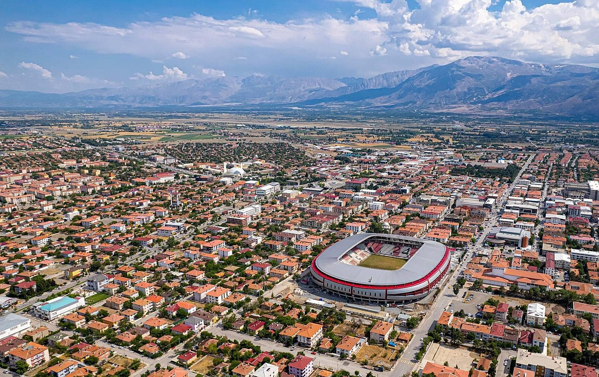
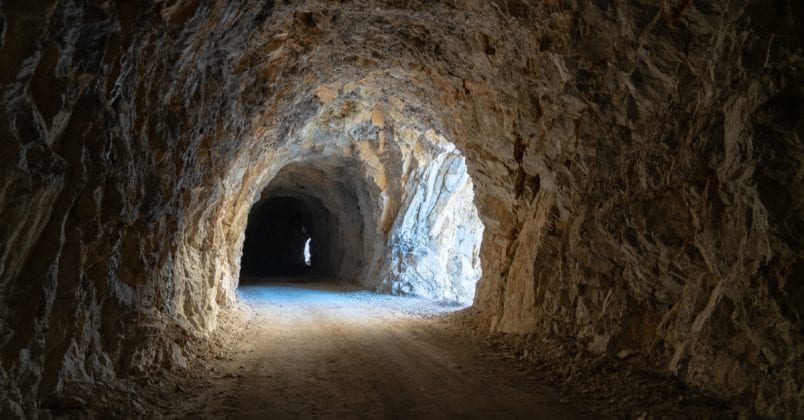
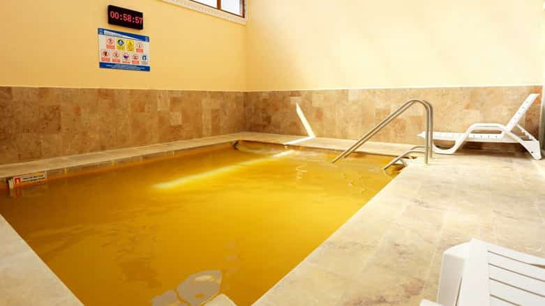
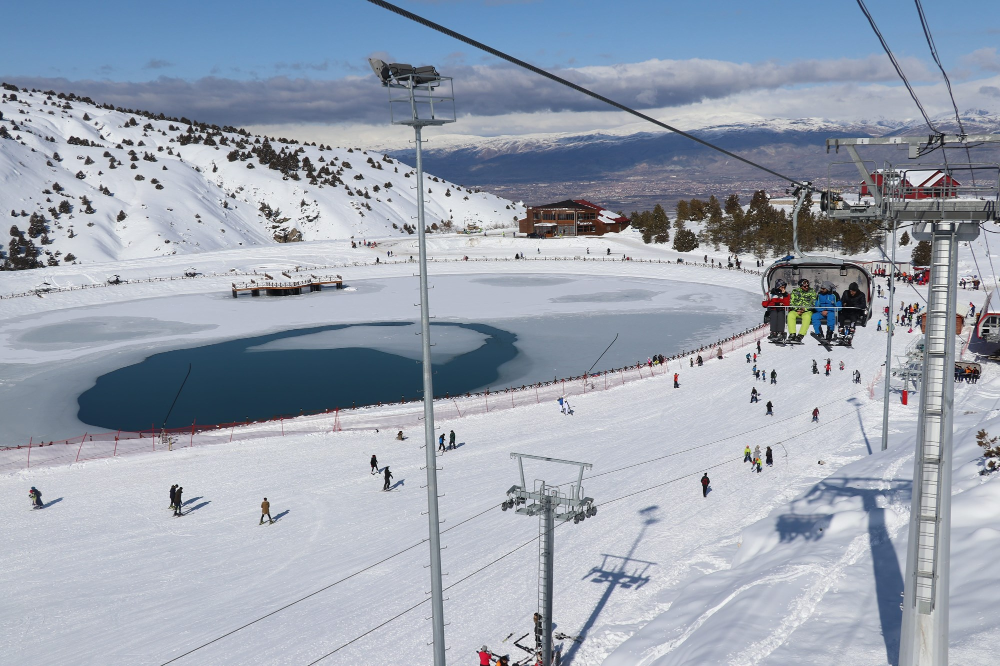

Erzincan , Türkiye'de Doğu Anadolu Bölgesi'nde, Erzincan ilinin merkez ilçesidir. Şehir tarihte Mengüçlü Beyliği'ne başkentlik yapmıştır. Doğusunda Çayırlı ve Üzümlü, batısında Kemah, kuzeybatısında Refahiye ilçeleri, kuzeyinde Gümüşhane, güneyinde Tunceli illeriyle komşudur. 
Anadolu'da Türk hakimiyeti Malazgirt Meydan Muharebesi sonrası Türklerin Anadolu'yu vatan edinmesiyle başlamış, Malazgirt Muharebesi kazanılınca Alparslan, Karasu ve Çatlı nehirleri vadilerinin fethine komutanlarından Mengücek Ahmet Gazi'yi görevlendirmiştir. Erzincan, Kemah, Divriği ve Şebinkarahisar yörelerini hakimiyeti alan Ahmet Gazi, Kemah'ı merkez yaptı.
Erzincan’ın Refahiye ilçesine bağlı Altköy mevkiinde konumlanan Köroğlu Mağarası’na ulaşım kolay olmakla birlikte, mağaraya taş merdivenlerle çıkılıyor. İçinde kesilmiş taşlarla yapılan oturma bankları mevut olan mağara adını Köroğlu’nun kır atına ait olduğu düşünülen mağara içindeki izlerden almıştır. Oluşumların ilginçliği keşif yapmayı sevenler için ideal bir noktadır.
Şehir merkezine 15 kilometre kadar uzaklıkta yer alıyor olup su sıcaklığı 31 derecedir. Ekşisu Kaplıcası’nın suları içerisinde; magnezyum, sodyum ve karbondioksit yer almaktadır. Sağladığı yararlar arasında özellikle mide, solunum ve romatizma bulunuyor.
Erzincan şehir merkezine 12 kilometre uzaklıkta bulunan Ergan Kayak Merkezi, Türkiye’nin en uzun liftlerini bünyesinde bulunduran teleferik ve telesiyej tesisine ev sahipliği yapıyor. Ergan Dağı Kış Sporları Turizm Merkezi kayak alanı 1800 metre, 2662 metre ve 2455 metre uzunluklarına sahip olup, ülkemizin en yeni kayak merkezi olma niteliğini taşımaktadır.
Erzincan nüfusu bir önceki yıla göre 2.920 artmıştır. Erzincan nüfusu 2021 yılına göre 237.351'dir. Bu nüfus, 120.367 erkek ve 116.984 kadından oluşmaktadır. Yüzde olarak ise: %50,71 erkek, %49,29 kadındır.